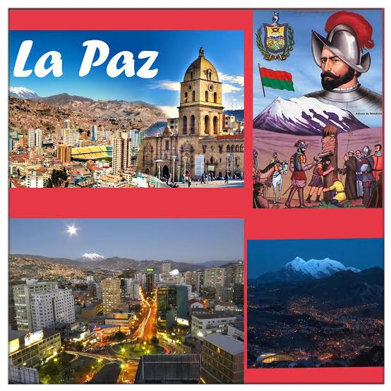
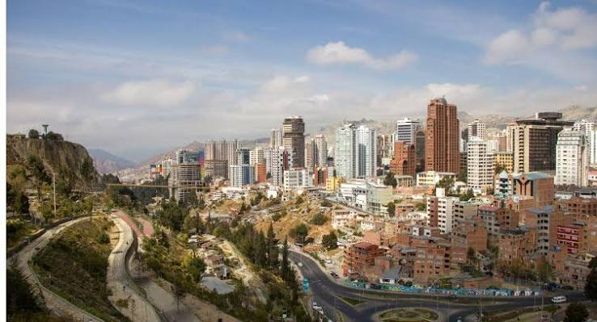

FUNDACION DE LA PAZ
Por: Maria Belen Tito
Historia: 1548: Fundación de Nuestra Señora de La Paz (Bolivia) El capitán español Alonso de Mendoza fundó la ciudad bajo el nombre de Nuestra Señora de La Paz en la localidad altiplánica de Laja. El acto se realizó por orden de Pedro de la Gasca para conmemorar la pacificación del Virreinato del Perú tras las cruentas guerras civiles entre conquistadores. Tres días más tarde, la ciudad fue trasladada a su ubicación definitiva en el valle de Chuquiago Marka, buscando un clima más benigno y una posición estratégica para el comercio.
 |  |
 |  |